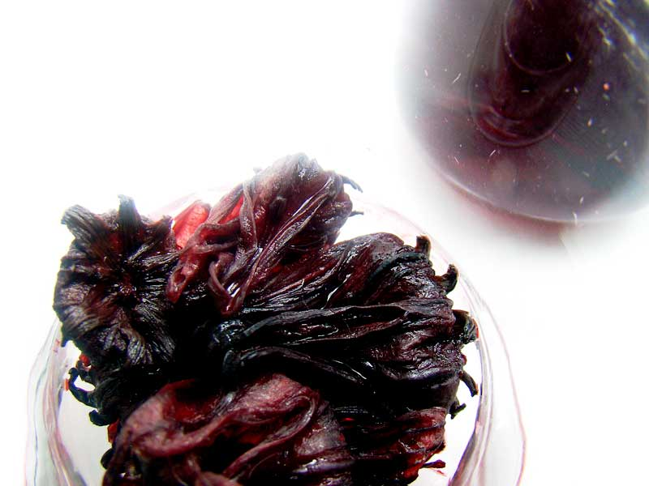

The starting customer
People familiar with bissap and African food traditions, alongside curious home cooks looking for new ingredients.
INVESTOR & INDUSTRY PARTNER PRESENTATION
Introducing HOHM. A food brand bringing African ingredients into the rituals that make us feel at home.
Explore the opportunityProposed formats. Illustrative packaging.
THE VISION
HOHM connects the idea of home with homme, the French word for man: a reminder of humanity’s connection with nature.
Our ambition is to turn distinctive African fruits and botanicals into approachable foods that fit daily life. Familiar preparation, clear ingredients, and a welcoming brand.
We are seeking investors and food industry partners to help validate the products, establish reliable production, and build a repeatable route to market.
Development-stage proposal. Product, sourcing, and commercial plans remain subject to validation.
THE CUSTOMER OPPORTUNITY
People familiar with bissap and African food traditions, alongside curious home cooks looking for new ingredients.
A hibiscus infusion at the table. Baobab mixed into a smoothie, breakfast bowl, or recipe. Clear uses make the first purchase easier.
Ingredient education and a distinctive brand can convert trial into repeat purchases at a price that supports healthy economics.
Proposed customer segments and demand hypothesis. No customer traction or market-size claim is implied.
A FOCUSED PRODUCT START
Dried flowers for hot and cold infusions, inspired by the original bissap concept.

Fruit powder to stir into smoothies, yogurt, breakfast bowls, and everyday recipes.
Formats, weights, prices, and uses are proposed for testing. No final formulation, certification, or health benefit claim is represented.
PRODUCT STRATEGY
A proposed dry-product pilot gives HOHM a focused way to learn before committing to bottled beverage production.
Validate ingredient quality, packaging fit, taste, everyday usage, and willingness to pay.
Explore tea bags, drink mixes, and larger packs with café and culinary partners.
Revisit the original juice and concentrate concept with a beverage specialist and confirmed unit economics.
ROUTE TO MARKET
Build on the geography in the original business plan. Begin with direct feedback and selected independent accounts before broader distribution.
Recipe-led content, sampling, community events, and two-product bundles. Measure acquisition cost and repeat purchase.
Natural food stores and culturally relevant grocers. Measure weekly sell-through and account reorders.
Test preparation with chefs, cafés, and fitness venues before committing to dedicated foodservice formats.
Proposed channels. No signed retail, distribution, or supply agreements are claimed.
COMPETITIVE POSITION
| Customer choice | Established offer | HOHM’s proposed focus |
|---|---|---|
| Ingredient specialists | Baobab and hibiscus sold as individual ingredients | A coherent African ingredient pantry brand |
| Familiar cultural groceries | Products purchased through existing food traditions | Keep the cultural connection and welcome first-time users |
| Convenient drinks | Ready-to-consume formats | Start with versatile at-home preparation, then assess beverages |
The brand alone is not a moat. Reliable sourcing, product quality, retailer relationships, and repeat customers must make the difference.
CURRENT PRICE REFERENCES · CHECKED NOVEMBER 23, 2026
12 oz retail pack.
$1.17 per ounce.
Organic, 1 lb listing.
$1.14 per ounce.
$32.68 per 100 pouches.
Unprinted packaging reference.
Public listings are reference points, not HOHM supplier quotes. Prices may change and exclude freight and tax. Pouch capacity and barrier suitability require product-specific testing. HOHM’s proposed prices carry a premium that customer testing must justify.
PROPOSED UNIT ECONOMICS · USD
Unquoted wholesale sourcing targets: $8/lb hibiscus and $10/lb baobab. These are negotiation goals, not verified supply costs.
| Per pouch | Hibiscus · 4 oz | Baobab · 8 oz |
|---|---|---|
| Target retail price | $9.99 | $16.99 |
| Ingredient cost | $2.00 | $5.00 |
| Pouch + label assumption | $0.65 | $0.65 |
| Filling / packing assumption | $0.85 | $0.85 |
| Inbound freight + loss allowance | $0.80 | $0.80 |
| Total product cost | $4.30 | $7.30 |
| DTC product gross margin* | 57.0% | 57.0% |
| Direct wholesale product gross margin* | 28.3% | 28.4% |
*Before discounts, fulfillment, card fees, marketing, overhead, and tax. Direct wholesale assumes HOHM receives 60% of retail price; no distributor layer. All non-ingredient costs above are planning assumptions requiring quotes.
FIRST 12 SELLING MONTHS · ILLUSTRATIVE, NOT A FORECAST
Operating break-even: approximately 31,225 pouches per year.
Equal product mix; 60% of units sold direct to consumer and 40% direct wholesale. DTC deductions: 2% returns/discounts. Wholesale deductions: 5% trade allowance on a price equal to 60% of MSRP. Net revenue averages $11.00784 per pouch.
Two pouches per DTC order. Domestic card fee assumption: 2.9% + $0.30 per order, based on Stripe’s U.S. standard listing. DTC fulfillment: $1.50 per pouch. Wholesale freight: $0.35 per pouch. Customer-paid DTC postage is assumed to fully offset carrier cost. No free-shipping subsidy or distributor commission is included.
Variable selling costs average $1.364726 per pouch. Product cost averages $5.80 at target sourcing. Contribution is $3.843114 per pouch. Annual fixed operating budget: $60,000 team compensation, $30,000 marketing, and $30,000 operations, insurance, professional services, and administration. These are budget assumptions, not market wage or service quotes.
*Operating result excludes one-time development costs, financing, depreciation, and tax. Inventory, supplier deposits, and customer payment terms affect cash separately. This is a sensitivity model, not a full cash-flow forecast.
Base volume logic: 600 DTC orders per month × 2 pouches × 12 months = 14,400 pouches; 40 retail accounts × 20 pouches per month × 12 = 9,600. These are unvalidated sales targets and assume a full selling year, not an account ramp.
Payment fee reference. No sales, purchase orders, or repeat-purchase data have been supplied to substantiate these volumes.
This model follows the cost scenario selected above. Higher ingredient costs, subsidized shipping, or distributor fees can materially reduce contribution.
PROPOSED PILOT & DECISION GATES
Supplier samples, specifications, independent testing, label review, packaging fit, shelf-life work, and manufacturing quotes.
Gate: a documented, costed productSmall production run, sampling, direct sales, and a limited retail trial. Record actual cost per acquisition and contribution.
Gate: demand at the intended priceTrack repeat orders by customer cohort, account reorders, returns, and supplier reliability before adding inventory.
Gate: repeat demand with viable marginsMilestone sequence is proposed. Timing and numerical success thresholds should be agreed with the operating and investment partners before launch.
CAPITAL DISCUSSION
Illustrative funding envelope for partner discussion. Final raise size, instrument, valuation, and terms remain to be agreed.
New planning proposal, not an inflation-adjusted version of the original $275,000 financing plan. Inventory is working capital, not an additional P&L expense. A monthly cash model and supplier terms must confirm funding adequacy and runway.
THE PARTNERS WE NEED
Traceable supply, consistent specifications, landed-cost visibility, dependable lead times, and appropriate quality documentation.
Contribution: supply reliabilityFormulation and process expertise, safety assessment, shelf-life validation, packaging compatibility, and a realistic production plan.
Contribution: commercial readinessPilot accounts, category feedback, merchandising knowledge, and account-level sell-through data.
Contribution: a tested route to marketPatient early-stage capital, operating experience, governance, and introductions that help the team reach the next evidence gate.
Contribution: capital and accountabilityOperating leadership, ownership, legal entity, and advisory appointments must be confirmed. No named partner or team appointment is implied.
SOURCE NOTES & INVESTOR DILIGENCE
The supplied presentation is a December 2014 Fisher College senior project by Nelson Abreu for Seriously Red Bissap Juice / Healthy Drink Trends LLC. It proposed New England and upstate New York distribution through natural stores, fitness centers, retail, bars, and restaurants, with tea bags and concentrate also mentioned.
HOHM is the current brand direction. Legal continuity, ownership of prior work, and any current role for the original plan’s author have not been established. The original 5-metric-ton monthly sourcing goal is a planning statement, not a confirmed supply agreement.
The workbook explicitly states that its numbers are examples. These figures describe the old bottled-beverage model and are not current HOHM results or projections.
| Legacy metric | Year 1 | Year 2 | Year 3 |
|---|---|---|---|
| Sales | $4,510,000 | $4,961,000 | $5,457,100 |
| Gross profit | $1,853,725 | $2,039,097 | $2,243,007 |
| Reported profit* | $1,004,768 | $1,111,215 | $1,228,187 |
*The workbook labels this “Net Profit (Loss)” but includes no income-tax line. Year 2 and Year 3 apply a generic 10% growth assumption.
Legacy case pricing: 6 bottles $9, 12 bottles $16, 18 bottles $25, 24 bottles $32. Year 1 volumes total 262,000 cases / 3,264,000 bottles. Startup requirements were $265,060: $97,810 initial expenses, $117,250 equipment, and $50,000 cash. Financing totaled $275,000: $225,000 debt and $50,000 owner investment, leaving a $9,940 difference.
The original break-even calculation was approximately $1,754,325 in annual sales, using a 36.46% contribution margin and $639,657 fixed costs. It should not be applied to the new dry-product scenario.
Reviewed November 23, 2026. Public prices are snapshots, not contractual offers.
Open diligence: founder and operator biographies; legal structure and cap table; supplier and co-packer quotes; current landed costs; final food category and labeling review; validated shelf life; paid customer tests; retailer commitments; and a monthly cash-flow model. No market-size estimate, signed contracts, clinical evidence, or operating traction has been supplied.
Brand source: HOHM PACK v1.0, November 2026. Business sources: “Final Bissap Juice presentation.pptx” and “Final Bissap Master Matrix Revised by AA V.1.9 120412 2.xls.” Ingredient imagery comes from the supplied presentation.
AN INVITATION TO BUILD
We’re looking for partners who can help turn a clear brand vision into trusted products and a sustainable business.
Investment, production, ingredient sourcing, and retail collaboration